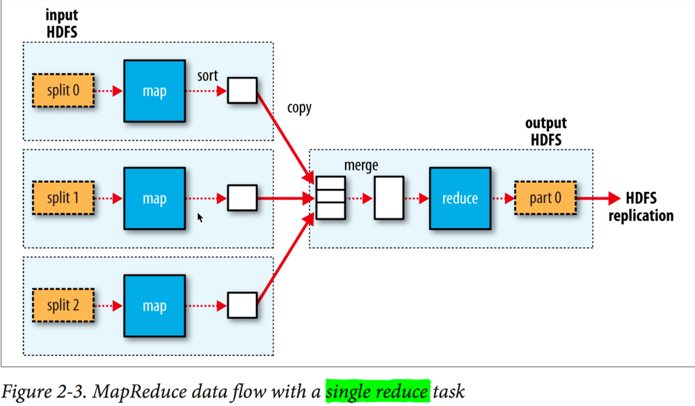
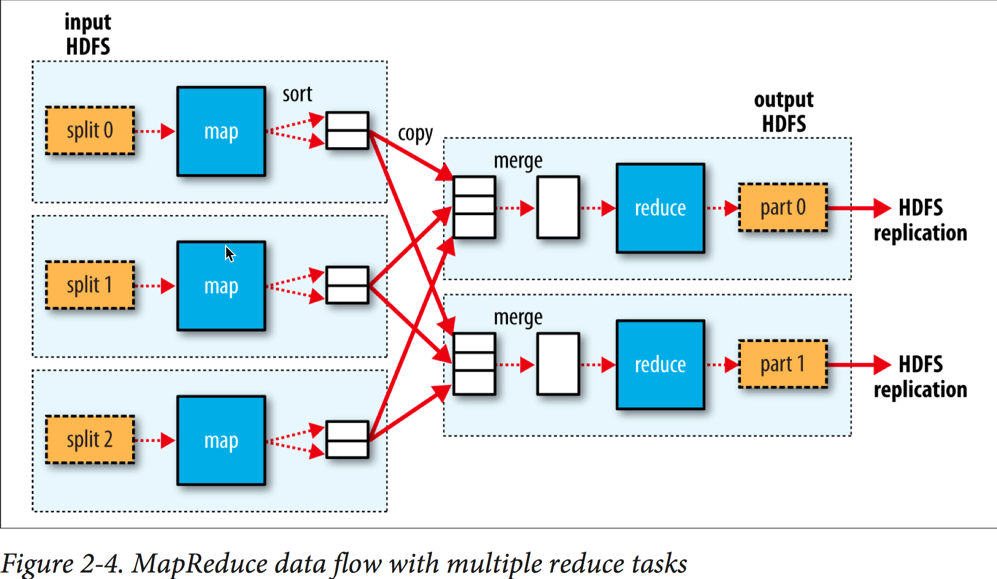
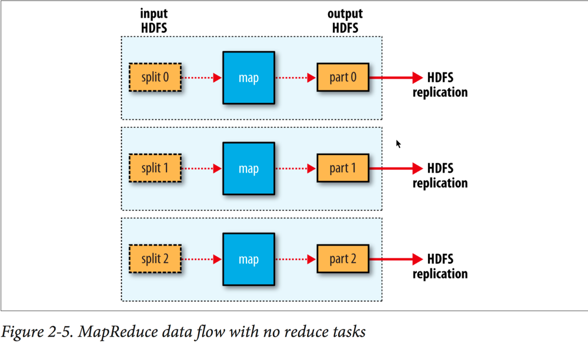
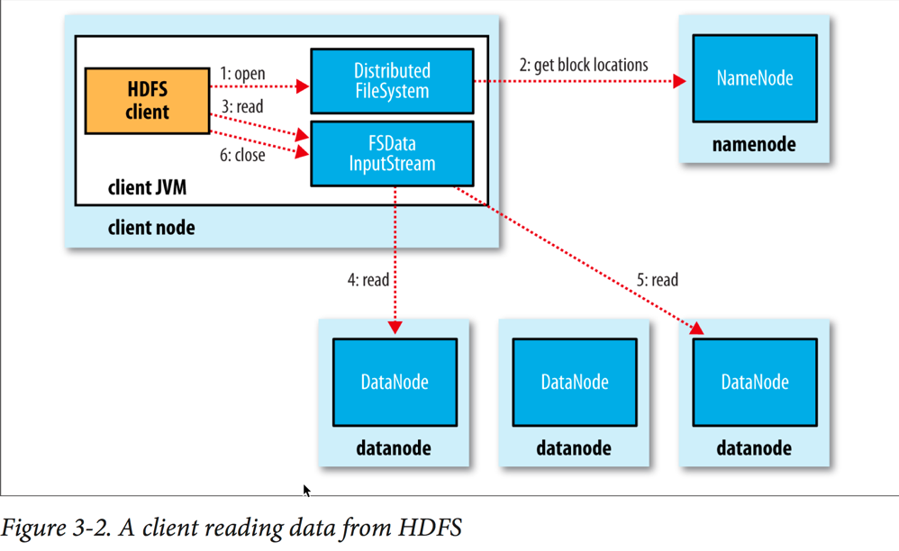
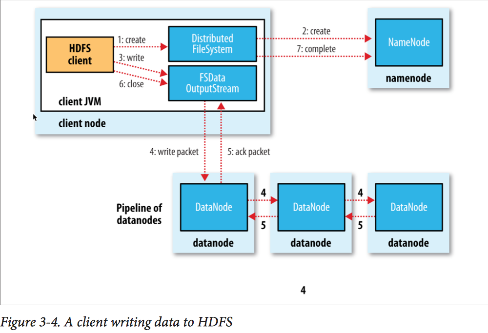
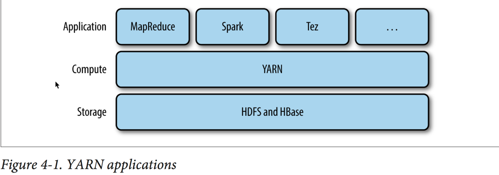
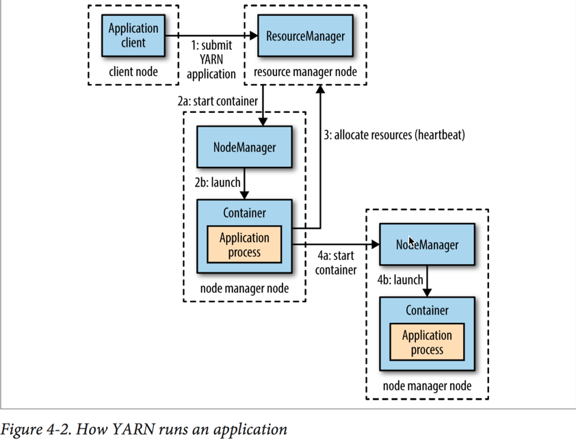
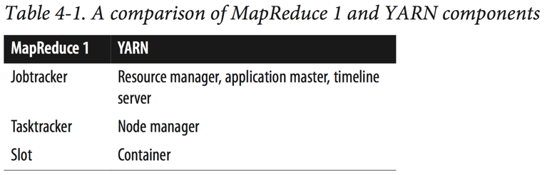

MapReduce
概念
Hadoop会将MapReduce的任务的输入文件分隔成固定大小的碎片（input splits），并且每个split对应一个map任务。
为了避免无意识的覆盖，所以MapReduce的输出目录事先不能存在。
Hadoop会尽量让map任务在数据存储的节点上进行，因为这样不会占用珍贵的集群带宽，这被称作data locality optimization。为了让数据能够尽可能在map任务所在的节点上，所以一个最优的split大小应该为一个block的大小，即input在一个节点上能存储的最大的大小。
Map任务会将输出写到本地磁盘而不是HDFS。因为Map任务的输出仅仅是一个中间结果，当Reduce任务处理结束之后这些结果将会被丢弃，所以存放在HDFS并拥有多个副本是不划算的。
一般来说一个Reduce的输入来自所有的Mapper，这意味着Mapper的输出需要通过网络传输到Reduce任务运行的机器上。
Reduce的输出会存放在HDFS上，任务运行的节点上会存放一份副本，其他的副本会通过网络存放在其他off-rack的节点。
Data Flow

Reduce任务的数目并不取决于输入的大小，而是单独确定的。
当有多个Reduce任务的时候，Map任务会partition他们的输出，而且每一个Map任务会为每一个Reduce任务提供一个partition。partition函数可以用户自定义，默认的partition函数采用的是hash。

有可能不存在reduce任务。

Combiner function
为了降低MapReduce任务过程中的集群带宽消耗，应该减少map和reduce任务之间的数据传输的大小。所以Hadoop允许用户去指定一个combiner function去处理map的输出，达到减少reduce的消耗的作用。
1 | //指定combiner function |
Hadoop Streaming
Hadoop Streaming使用Unix standard streams作为Hadoop和你的程序之间的接口，所以任何可以使用标准输入输出的编程语言都可以用来写MapReduce。
Java MapReduce和Streaming之间的区别：
The Java API is geared toward processing your map function one record at a time. The framework calls the map() method on your Mapper for each record in the input, whereas with Streaming the map program can decide how to process the input. for example, it could easily read and process multiple lines at a time since it’s in control of the reading. The user’s Java map implementation is “pushed” records, but it’s still possible to consider multiple lines at a time by accumulating previous lines in an instance variable in the Mapper. 4 In this case, you need to implement the cleanup() method so that you know when the last record has been read, so you can finish processing the last group of lines.
使用ruby以Streaming的方式启动MapReduce任务。
% hadoop jar $HADOOP_HOME/share/hadoop/tools/lib/hadoop-streaming-*.jar \
-files ch02-mr-intro/src/main/ruby/max_temperature_map.rb,\ ch02-mr-intro/src/main/ruby/max_temperature_reduce.rb \ -input input/ncdc/all \
-output output \ -mapper ch02-mr-intro/src/main/ruby/max_temperature_map.rb \
-combiner ch02-mr-intro/src/main/ruby/max_temperature_reduce.rb \
-reducer ch02-mr-intro/src/main/ruby/max_temperature_reduce.rb
其中-files用来将脚本在集群间传输。
HDFS
HDFS is a filesystem designed for storing very large files with streaming data access patterns, running on clusters of commodity hardware.
优势
Very large files：用来存放大文件
Streaming data access：一次写入，多次读取。各种分析使用大量数据，所以读取整个数据集的时间比读取第一个记录的时间更重要。
Commodity hardware：运行在普通的商用机器上，能够容忍集群中机器的宕机但不对用户产生很大的影响。
劣势
Low-latency data access：需要访问文件具有低延迟的应用不适合使用HDFS。HBase将会是更好的选择。
Lots of small files：因为NameNode中存放了系统中文件的元信息，所以NameNode的内存大小是影响整个集群文件数量的瓶颈。根据经验，每个文件、目录、块将占用150字节NameNode的内存。
Multiple writers, arbitrary file modifications：暂时不支持随机修改和多个writer同时写。
概念
Blocks
像单机的文件系统一样，HDFS也有文件块的概念，但是默认更大，为128Mb（一般的单机文件系统为512字节）。另外，特别的，和目前的单机文件系统不同的是，不满一个块大小的文件并不会占用整个块。
Namenodes and Datanodes
HDFS集群以“主从模式”工作，一个Namenode和多个Datanodes。
Namenode管理了文件系统的命名空间，维护了filesystem tree以及所有文件和目录的原信息。这些信息在存放在本地磁盘上，包含两个文件：the namespace image和the edit log。通过Namenode可以知道某个文件所有块所在的Datanode。
Datanode负责依据Namenode或者client的指令来存储或读取文件。并且会周期的向Namenode汇报它所存储的所有块。
如果一个HDFS中的Namenode失效了，那么整个文件系统都将无法工作，所以Namenode需要有高可用性。Hadoop提供了两种机制：
- 备份元数据。将元数据同时写入多个文件系统，比如同时写入本地磁盘和远程的NFS挂载。
- 使用
secondary namenode。它的主要作用是周期的将the namespace image和the edit log合并，以避免the edit log文件过大。通常其运行在一个单独的机器上，因为其需要大量的CPU和内存。虽然它和Namenode的状态之间存在延时，当系统崩溃的时候会存在数据丢失，所以一般会将备份的元数据复制到secondary namenode上作为新的Namenode。（也可以采用另一个standby namenode来实现高可用性）
块缓存
datanode的内存上可以缓存一些常用的文件块。默认一个文件块只在一个datanode上缓存，对每个文件这个数字是可以配置的。 任务调度器会充分利用来缓存来完成任务。
用户或者应用可以通过添加一个cache directive到cache pool来操作Namenode去缓存哪些文件。
HDFS Federation
为了解决文件系统越来越大，导致单个Namenode的内存不够用的状况。
建立多个Namenode每个负责部分文件系统的文件。每个存储着一个namespace volume和一个block pool。其中namespace volume是独立工作互不通信的，而block pool是不分区的。
HDFS High Availability
当一个Namenode失效后，新的代替者需要经历一下几个步骤：
- loaded its namespace image into memory
- replayed its edit log
- received enough block reports from the datanodes to leave safe mode.
整个集群才能恢复工作。
所以为了集群中Namenode更高的可用性，可以配置一对Namenode一个为active一个为standby，当激活状态的Namenode失效，待机的那个将顶替。为此有以下特点：
active和standby共享edit log。以使得代替时能够同步前者的状态。Datanodes需要向所有的Namenode汇报自己的块信息，因为块信息是存放在内存中的。- 整个故障转移过程应该对客户透明，应该有自动的映射工作。
secondary namenode的作用被standby namenode代替。
有两种方式实现HA：NFS filer和quorum journal manager (QJM)。推荐后者。
QJM方式通过运行一些journal nodes来实现，每个编辑日志必须写入大多数journal nodes才算数。所以日志结点的个数为奇数，一般为3个。
从active namenode到standby namenode的转换是由failover controller控制的。有很多种failover controller，默认使用ZooKeeper。
可以手动进行故障转移，比如在日常维护或者升级的时候。
被动故障转移的时候，需要保证之前的active namenode不会对集群造成破坏，这通过fencing来实现。
Hadoop命令行
1 | hadoop fs -ls . |
第二列为备份因子。文件夹不会被datanode备份，而是由namenode存储。第三列为文件所属的用户。第四列为文件所属的用户组。第五列为文件的大小，单位为字节。第六列和第七列为最后修改的日期和时间。
默认文件系统的权限校验机制没有开启，通过dfs.permissions.enabled属性设置。
HDFS文件系统
WebHDFS
非java的应用使用HDFS可以通过使用WebHDFS暴露的HTTP RESTful API来访问。但是其效率比原生的java api要慢。
NFS
可以将HDFS通过Hadoop’s NFSv3 gateway挂载到用户本地系统上。
FUSE
类似NFS，但是NFS更健壮。
Java接口
通过URL.setURLStreamHandlerFactory(new FsUrlStreamHandlerFactory())让Java识别HDFS URL，这个方法每个JVM只能运行一次。
Reading Data from a Hadoop URL
1 | public class URLCat { |
Reading Data Using the FileSystem API
1 | //获取文件系统实例，因为有多种文件系统实现 |
1 | public class FSDataInputStream extends DataInputStream implements Seekable, PositionedReadable { |
1 | public interface Seekable { |
1 | //线程安全 |
1 | public class FileSystemDoubleCat { |
write data
1 | //create any parent directories of the file to be written that don’t already exist |
1 | public class FileCopyWithProgress { |
Querying the Filesystem
1 | public class ShowFileStatusTest { |
读取文件过程

namenode返回的datanodes会有一个选择的过程，根据用户的网络拓扑来选出最优的节点返回，因为同一个文件有多个副本。
- step 1：客户端调用
DistributedFileSystem的open( )。 - step 2：
DistributedFileSystem通过远程调用namenode去获取文件前部分块的地址。对文件的每一块，namenode会返回其所在的节点们，并且根据其与客户端的距离来进行排序。 - step 3：客户端调用
DistributedFileSystem的read( )方法。 - step 4：首先会连接文件第一块中最近的那个节点，数据不断传输到客户端，遇到错误则用第二近的代替。
- step 5：读完第一块读下一块。
创建并写文件的过程

- step 1：客户端调用
DistributedFileSystem的create()方法。 - step 2：
DistributedFileSystem通过远程调用在namenode中文件系统的创建一个新文件，此时并没有任何块与其相关。 - step 3：当写入数据的时候，
DFSOutputStream会将数据分成小的数据包，并放入data queue。 - step 4：
Datastreamer作为消费者，负责向namenode询问存放每一块的数据节点列表（列表是因为存在副本）。这个数据节点列表组成了一个管道，数据会依次向下一个节点传递。 - step 5：所有待确认的数据包会在一个
ack queue中，仅当列表中所有的数据节点都进行了确认之后才会从队列中移除。 - step 6：关闭流，同时
flush所有剩余的数据包到管道中。 - step 7：向
namenode汇报完成。
此处注意：默认情况下，当前正在被写的块对其他读者不可见。HDFS提供了
FSDataOutputStream对象的hflush方法来保证将所有缓冲区内的数据写入datanodes的内存，但是并不保证写入磁盘，所以如果此时发生事故将会造成数据流失。如果要保证写入磁盘，应该采用hsync()。关闭流默认会执行hflush()。
Hadoop选择备份节点的原则
两个极端：
- 如果将数据块备份都放在同一块上的话，那么写时带宽最小，但是对于
off-rack的节点的读带宽将会很高。并且这样可用性并不高。 - 将所有的数据块备份放入不同的数据中心，将会获得最高的安全性，但是牺牲了带宽。
Hadoop默认：第一份写入客户端本地（如果客户端运行在
datanode节点上，如果不在，那么将会随机的选取一个不是很忙的数据节点）。第二份，随机选择一个off-rack节点。第三份写入和第二份同一个rack中的不同节点上(在满足这些条件的节点中随机选取)。
YARN
介绍
Apache YARN (Yet Another Resource Negotiator) is Hadoop’s cluster resource management system. YARN was introduced in Hadoop 2 to improve the MapReduce implementation, but it is general enough to support other distributed computing paradigms as well.

YARN上通过两个长时间运行的守护进程来提供其核心服务：
resource manager：每个集群上运行一个，用来管理集群的资源的使用。
node manager：运行在集群所有节点上，用来启动和监控container（container是在特定资源下运行应用程序进程的）。

在YARN上运行一个程序，需要经历以下步骤：
- step 1：客户端联系
resource manager并让其运行一个application master的进程。 - step 2a 2b：
resource manager找到一个可以为运行appliation master进行启动container的node manager。appliation master运行后会做什么取决于应用程序。 - step 3：
appliation master可以直接在自己运行的container内完成计算任务，也可以向resource manager申请更多的资源。 - step 4a 4b：使用申请来的
container来进行分布式计算任务。
申请资源的时候可以声明需要的CPU、内存以及局部性要求。
运行在YARN上的应用可以随时申请自己需要的资源。
构建YARN上的应用
Apache Slider：Apache Slider is a application to deploy existing distributed applications on an Apache Hadoop YARN cluster, monitor them and make them larger or smaller as desired -even while the application is running.
Apache Twill：Apache Twill is similar to Slider, but in addition provides a simple programming model for developing distributed applications on YARN. Twill allows you to define cluster processes as an extension of a Java Runnable, then runs them in YARN containers on the cluster. Twill also provides support for, among other things, real-time logging (log events from runnables are streamed back to the client) and command messages (sent from the client to runnables).
YARN与MapReduce 1对比
新旧API和MR1和MR2的四种组合均兼容。
在MapReduce 1中，存在两种常驻守护进程，jobtracker和tasktrakers。
jobtracker用来协调调度任务在tasktracker上运行。
tasktracker用来运行任务并且向jobtracker发送任务进度。
